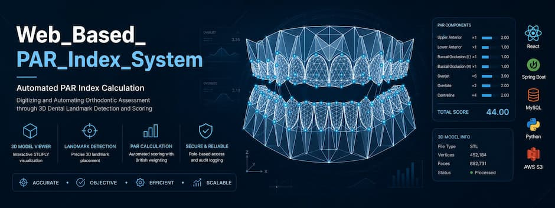
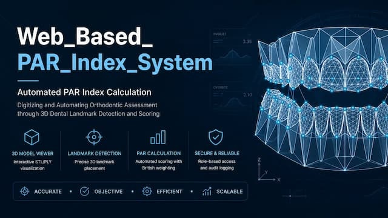

Automated PAR Index Calculation from 3D Dental Models
A web-based clinical system that digitises orthodontic PAR (Peer Assessment Rating) scoring — replacing manual, cast-based measurement with 3D model upload, landmark detection, and automated geometric calculation of the weighted PAR score.

Manual PAR scoring doesn't scale
The PAR Index is the clinical standard for measuring malocclusion severity and treatment outcome, but the way it's actually produced in practice hasn't changed much.
-
✕
Manual, cast-based measurement. Clinicians traditionally measure PAR components by hand from physical or scanned dental casts using a ruler and a PAR gauge.
-
✕
Slow, repetitive process. Seven components — upper/lower anterior, buccal occlusion, overjet, overbite, and centreline — must each be measured and recorded separately per case.
-
✕
Dependent on a trained clinician. Consistent scoring assumes the assessor is calibrated to the British Standard PAR system — capacity that is not always available at scale.
-
✕
Inter-observer variability. Manual measurement naturally varies between different clinicians scoring the same case, which is a well-known limitation of hand-scored PAR.
-
✕
3D scan data goes underused. Practices increasingly capture intraoral 3D scans, but that geometric data isn't routinely used to automate the scoring it could support.
From 3D scan to PAR score, digitally
The system takes the same clinical inputs orthodontists already work with — upper, lower, and buccal 3D scans — and automates the scoring pipeline around them, while keeping the clinician in control of every landmark it proposes.
-
✓
Digital 3D model upload. Orthodontists upload upper, lower, and buccal STL scans directly into a patient's case — no physical cast handling.
-
✓
ML-assisted landmark proposal. A geometric detection service analyses each mesh and proposes clinical landmark points automatically as a starting point.
-
✓
Clinician review & confirmation. The orthodontist reviews and adjusts proposed landmarks in an interactive 3D viewer before anything is scored — the clinician always has the final say.
-
✓
Automated, weighted PAR calculation. Once landmarks are confirmed, the system computes the full weighted PAR total using the British Standard weighting — consistently, every time.
-
✓
Optional independent ML cross-check. A separately trained regression model can estimate a total PAR score directly from the mesh geometry, as an advisory second opinion — never a replacement for the confirmed score.
Conceptual flow
3D Dental Model
Upper / lower / buccal STL upload
Landmark Detection
Geometric proposal by the ML service
Clinical Review
Orthodontist confirms landmark points
PAR Scoring
Weighted score computed & stored
What the system actually does
Every feature below is implemented in the codebase — nothing here is aspirational.
Automated PAR Calculation
Computes the full weighted PAR total from confirmed clinical landmarks — upper/lower anterior, buccal occlusion, overjet, overbite, and centreline.
3D Dental Model Processing
Accepts STL mesh uploads per case, rendered and manipulated in an interactive Three.js-based 3D viewer in the browser.
Orthodontic Landmark Detection
A geometric mesh-analysis service proposes landmark points per arch, which the clinician reviews and confirms before scoring.
Patient & Case Management
Create and search patient records; manage PRE/POST treatment cases that can be paired to track progress across treatment.
Authentication & Authorization
Stateless JWT authentication with BCrypt password hashing, enforced by role-based access control on every endpoint.
Training Dataset Support
Undergraduate users submit anonymised scan sets with a ground-truth PAR score; orthodontists review and approve them for ML retraining.
ML Cross-Check & Audit Trail
An advisory total-PAR estimate from a trained regression model, with every calculation, prediction, and finalize action written to an audit log.
Administrative Functions
Admin-only user management, audit log review, ML model metrics, versioned training runs, and rollback control.
Case Finalization
Orthodontists lock a case once scoring is complete; only an administrator can reopen a finalized case.
What the application looks like
Screenshots are being prepared — each card below is reserved for a specific screen and will be filled in as they're captured.
Three services, one clinical record
The browser never talks to the ML service directly — every ML call is proxied and authorised through the Spring Boot backend, which owns all clinical data.
X-ML-Service-Key header, validated by FastAPI middleware — the ML service is never reachable directly from the browser.
Frontend responsibilities
- 3D model upload & viewing (Three.js)
- Landmark review & confirmation UI
- Case, patient & results dashboards
- JWT-authenticated API calls
Backend responsibilities
- Authentication & role authorization
- Patient / case / file persistence
- PAR calculation logic
- Proxying & securing ML requests
ML service responsibilities
- Geometric landmark detection
- Trained PAR regression inference
- Model training & version rollback
- Dataset preprocessing for retraining
Two distinct capabilities — kept clearly separate
It matters clinically which parts of a score are geometric measurement and which are model prediction. The system is explicit about this at every step.
1 · Geometric Landmark Detection
A rule-based, geometric method — surface curvature and mesh analysis (via trimesh / networkx) — not a trained neural network. It proposes a starting set of landmark points per arch. Every point must still be reviewed and confirmed by the orthodontist before it can influence a score.
2 · PAR Regression Model
A PyTorch (CPU) regression model, trained on approved training-set submissions, predicts an independent total PAR score directly from mesh geometry — with a confidence value. It is advisory only and never substitutes for the clinician-confirmed geometric score.
Input
Upper, lower, and buccal STL meshes uploaded to a case (three files for a full /predict call; a single slot for landmark proposal).
Processing
FastAPI service (par-ml) reads mesh files from a shared, read-only Docker volume — no re-upload required — and runs geometric or model inference.
Output
Proposed landmark coordinates, or a predicted total PAR score with confidence — both stored with a score_source so their origin is always traceable.
Landmark & prediction visualizations
Reserved for visual output from the detection and prediction pipeline as it becomes available.
The British Standard weighted PAR index
The system implements the standard weighted PAR components. The weighted total is calculated only from confirmed clinical landmarks.
| Component | Weight |
|---|---|
| Upper anterior | ×1 |
| Lower anterior | ×1 |
| Buccal occlusion — left | ×1 |
| Buccal occlusion — right | ×1 |
| Overjet | ×6 |
| Overbite | ×2 |
| Centreline | ×4 |
| Total Weighted PAR Score | Σ (component × weight) |
How a score is produced
- Landmark points are placed (or ML-proposed then confirmed) on the uploaded meshes
- Each of the seven components is measured geometrically from confirmed landmarks
- Each raw component value is multiplied by its fixed weight
- The weighted total is stored against the case with a
score_source—MANUAL,AUTO_LANDMARK, orML
Unconfirmed, ML-proposed landmarks can never contribute to a stored clinical score.
From mesh upload to landmark-ready viewer
Confirmed supported format: STL. Each case holds three model slots.
Upload
The orthodontist uploads an STL mesh for the upper arch, lower arch, and buccal (bite) view.
POST /cases/{id}/modelsStorage & checksum
The backend stores the file and its checksum, and can verify mesh integrity on demand.
GET /cases/{id}/models/{slot}/verifyInteractive 3D viewing
The mesh renders in-browser using a Three.js-based viewer, allowing the clinician to rotate, inspect, and place or adjust landmark points.
ML-assisted proposal
The backend reads the same file from a shared volume and requests a geometric landmark proposal from the ML service.
POST /cases/{id}/predict-landmarksTechnology stack
Every technology below is a direct dependency in the repository's build files.
Frontend
Backend
ML Service
Data & Infra
Three roles, clearly scoped permissions
Administrator
- Full user management & audit log review
- ML training control & version rollback
- Unfinalize a locked case
- Pre-seeded only — cannot self-register
Orthodontist
- Create & manage patients and cases
- Upload 3D models, review & confirm landmarks
- Calculate & finalize PAR scores
- Review undergraduate training submissions
Undergraduate
- Submit anonymised scan sets
- Provide ground-truth PAR scores for training data
- Track their own submission status
How access is protected
Authentication
Stateless JWT sessions (HMAC-signed), BCrypt password hashing at cost factor 10.
Authorization
Spring Security URL rules plus method-level @PreAuthorize role checks on nearly every endpoint.
Service-to-service
Backend → ML calls are authenticated with a shared secret header; CORS restricted to known local origins.
Current test coverage
This reflects what's actually in the repository today — reported plainly rather than overstated.
| Component | Test Type | Status |
|---|---|---|
| Backend — Security | JUnit unit test (JwtUtilTest) |
Partial |
| Backend — Patient Service | JUnit unit tests (PatientServiceTest) |
Partial |
| Backend — Storage Service | JUnit unit test (StorageServiceTest) |
Partial |
| Frontend | No automated test suite in the repository | Not documented |
| ML Service | No automated test suite in the repository | Not documented |
| CI/CD | No GitHub Actions / pipeline configuration found | Not documented |
| System / Docker | Manual verification via docker compose up and container healthchecks |
Manual |
Group 10 · CO2060
Department of Computer Engineering, Faculty of Engineering, University of Peradeniya.
Project supervision
Project visuals
A growing collection of concept visuals, development photos, and demonstration coverage. More will be added as the project progresses.

index.html for the exact folder and markup to use.